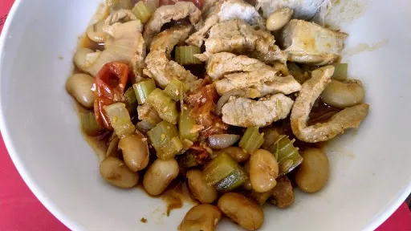

Mediterranean pork stew
45 mins
Serves 4

Ingredients
- 600 g lean pork medallions, fat trimmed
- 1 onion, thinly sliced
- 2 sticks celery, finely diced
- 3 cloves garlic, crushed
- 1 tbsp smoked paprika
- 1 tsp fennel seeds
- 400 g tin butter beans, drained and rinsed
- 175 ml chick stock
- 2 sprigs rosemary, leaves picked
- 12 cherry tomatoes
Instructions
- Mist a large pan with cooking spray and set over a medium-high heat. In batches, sear the
pork600 g
for 2 minutes of each side. Remove from the pan and set aside.
- Add the
onion1
, celery2 sticks
and garlic3 cloves
to the pan and cook for 6-8 minutes until soft. If the mixture starts to stick, add a splash of water to the pan.
- Stir in the
paprika1 tbsp
and fennel seeds1 tsp
, cook for 1 minute, then add the butter beans400 g tin
, stock175 ml
and rosemary2 sprigs
. Bring to a boil then reduce the heat to low. Return the pork600 g
to the pan, add the tomatoes12
, then cover and simmer for 10 minutes. Remove the lid and continue to simmer for 5 minutes or until the pork600 g
is tender and the stew thickened.
Weight Watchers Magazine
Short Link
Long Link